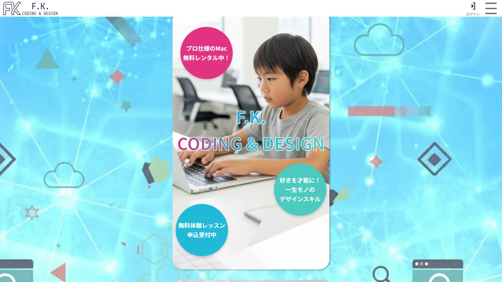

【この作品のポイント】
- AI技術を実務フローへ組み込んだLP制作
- 画像生成後にPhotoshopで色調・質感を統一
- モバイル閲覧を意識した軽量化・レスポンシブ実装
企業実習時に制作した伝統工芸品と地域物産品セレクトショップの仮想LP（モダンデザイン案）

【概要】
本作品は職業訓練校の企業実習時に制作したもので、実在する店舗の移転・サイトリニューアル提案を想定し、AI技術を制作フローへ取り入れながら制作したトップページのみのコンセプトモデルです。
「奈良の伝統を、今の暮らしに。」をテーマに、伝統工芸品が持つ本質的な美しさや静けさを現代的な落ち着いたデザインへ落とし込みました。
また、企業実習担当者から提示された構成案をベースに、 AIによる画像生成・構成調整・プロンプト改善を繰り返しながら、“伝統工芸品を取り扱う店としての信頼感” を重視して制作しています。
【目的】
店舗移転に伴うサイトリニューアル提案
企業実習内で与えられたテーマは、「既存店舗の移転に伴う新サイト提案」。 短期間でクオリティの高いビジュアル提案を行う必要があり、AI技術を積極的に制作へ組み込みました。
“AIっぽさ” を抑える品質調整
AI生成画像は便利である一方、画像ごとの色味や空気感にズレが出やすい課題がありました。 そのためPhotoshopを使用し、商品画像の明暗・彩度・色温度を一枚ずつ調整。 サイト全体に統一感を持たせ、「静かな高級感」が伝わるビジュアルを目指しました。
伝統工芸品を主役にするUI設計
余白を広く取ったミニマルレイアウトやページ内の色味を抑えることで、商品画像がより際立つよう意識しました。
【意識した点】
① モバイルファースト設計
スマートフォンユーザーを前提とし、モバイルファーストで設計を行いました。
限られた画面内でも情報の優先順位が明確に伝わるよう、構造設計と余白設計に注力しています。
② 制作コストの削減
モバイルファーストで制作したものをPC画面でもそのまま中央配置で使うことで、制作コストを圧縮しています。
③ 親子ともに意識したデザイン設計
子どもに対しては明るく親しみやすい配色を採用し、Webになじみのない保護者に対してはより可読性の高いレイアウトと情報構造を意識しました。
④ 情報量制御とUIコンポーネント活用
カルーセル、アコーディオン、ハンバーガーメニューを活用し、情報量の増加による視認性低下を防ぎました。
必要な情報を必要なタイミングで提示する構造にすることで、ユーザー体験の向上を図っています。
⑤ CTAの挙動設計
CTAボタンは視認性だけでなくサイトからの離脱を防ぐために、ファーストビューでは表示せずスクロール開始時に表示され、footerの上でとどまるように設計しました。
【制作期間】
一か月
【使用技術】
- HTML5
- CSS3
- JavaScript
【使用ツール】
- Figma
- Google font
- Photoshop
- Gemini
【課題・改善点】
初めて要件定義から制作を行ったため、ターゲット設定や要件整理に時間を要しました。
また、BEM設計の徹底が不十分であった点や、JavaScriptの実装をAIに依存していた点が課題として残っています。
【今後に活かすこと】
今後はBEMによるクラス設計を徹底し、保守性・拡張性の高いコーディングを実現していきます。
また、JavaScriptについても基礎から理解を深め、自力で設計・実装できるレベルまで習熟を目指します。
加えて、本作品はトップページのみの制作に留まっているため、下層ページの設計・実装まで行い、サイト全体としての完成度を高めていきたいと考えています。
【画面キャプチャ】

挙動制御されたCTAボタン

モバイル画面を中央配置するPC画面のファーストビュー

クリックでスライドが実行されるセクション

アコーディオンメニューを組み込んだセクション